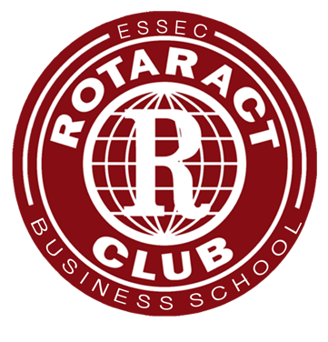
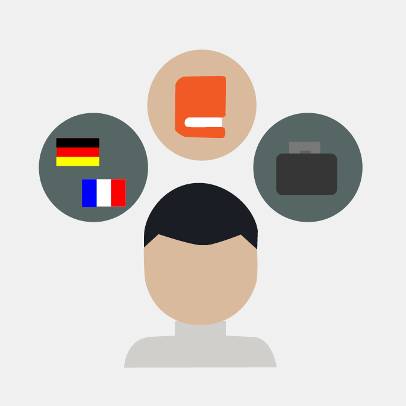
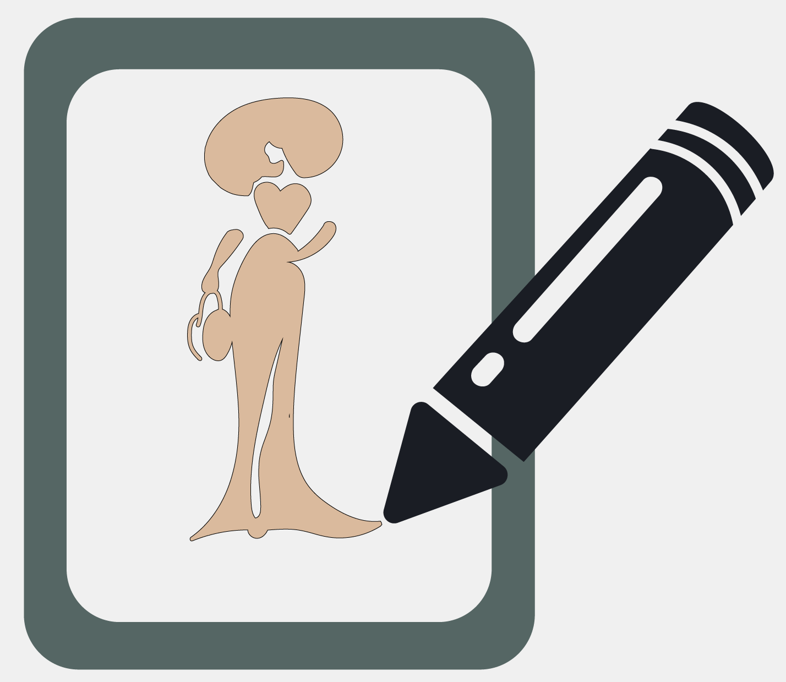

Currently, I am studying at ESSEC Business School and I am actively looking for a 3-month internship in Marketing, Event or Communication between mid-May and mid-September 2021. As an entreprising and determined person, I would like to contribute to the development of your company.

I’m currently the president of ESSEC CLUB ROTARACT, a student charity association. Its purpose is to participate in and organize numerous actions, such as maraudes, food and clothing drives, partnerships to raise funds, etc.
As president, I coordinate the different poles of the association (events, communication, sponsor and humanitarian), participate in each task of each pole, serve as liaison between members and the administration and associations, town halls, partner companies.
I coordinate a hundred members, including some 30 active members.
This allowed me to develop my management, organizational, relationship and communication skills

Languages :
-French : mother tongue -German : fluent -English : professional
-Spanish : intermediate -Chinese : basic

The luxury and fashion sector are two sectors that have always fascinated me and that correspond to my personality. Indeed, I am a perfectionist, picky, organized and ambitious person. I participate in the creation of a fashion brand.
In addition, I developed a creativity thanks to my arts classes as well as a great curiosity. For example, I was able to learn how to use the Adobe suite (Photoshop) by myself. This allowed me to increase my flexibility and learning abilities.
Thanks to numerous conferences with various major brands, organized in partnership with ESSEC, my motivation to work in this field has been increased tenfold and has confirmed my choices.